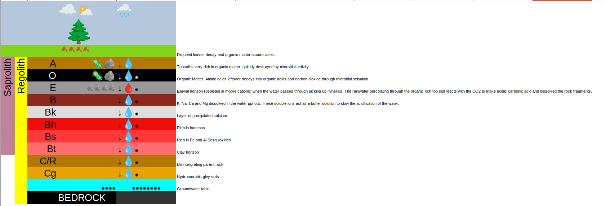

Soil Classification
Created Tuesday 30 November 2021
@GEOLOGY @YEAR3 @PALAEOSOLS
Classification is based on observation
Some early classifications were biased based on preconceptions about the @soil genesis
Classifications:
- US Soil taxonomy
- FAO (uses structured soil horizons)
- World Reference Base (based on measurable diagnostic soil properties)
Why do soils change vertically?
- Vegetation on top, dropping leaves, and then decay when they die. Lots of organic matter accumulates.
- Living organic matter in the root zone underground. Topsoil is very rich in organic matter. Quickly destroyed by microbial activity.
- Amino acids left which decay through @microbial_oxidisation. All organic matter decays into @organic_acids and then carbon dioxide.
- Rainwater percolating through the organic rich top soil becomes more acidic and makes @carbonic_acid when it reacts with the carbon dioxide.
- Rock fragments in soil will be dissolved in the acidic rain water.
- K Na Ca and Mg all get dissolved in the rainwater solution.
- The soluble ions act as a buffer solution and slow down the acidification of the water.
- The minerals can then ppt out in the B horizon
Horizons
@Soil_horizon

@Elluvial ≠ @Alluvial horizon is poor in mobile soluble @cations than the underlying stata
B: Minerals start to ppt out of solution. Rich in @Sesquioxides (have 3 oxygens and 2 other atoms like Al2O3 or Fe2O3.)
The @Illuvial horizon ≠ Elluvial is the B horizon enriched in some substance.
Cg: @Gley soils are green or blue hydromorphic (waterlogged) soils where @Gleization has happened. When groundwater stagnates, the small amount of oxygen in the water is consumed by the areobic bactiria. This changes the redox conditions which changes the colour. Often results in a mottled colour.
Not all soils have all the horizons. If there is no vegetation, there won't be an O horizon.
@Regolith is the all the way from the bedrock to the modern @soil surface
@Saprolith is from the ground level to the C horizon
When the perculating water eventually reaches the ground water table it starts to mix with the ground water.
| Soil | Elements | Horizons | Environment | Other | Time |
|---|---|---|---|---|---|
| Entisol | Al, Fe | Clay. No other layering | Flat alluvial environments like floodplains | 0 Young undeveloped soils | |
| Inceptisol | Al, Fe | A, E, W, C weakly developed, because not much time has passed. | Flat alluvial environments | 2Very young. | |
| Histosol | Lots of organic matter. Thick layers of carbon rich shale, peat, lignite and coal in the O horizon | Swamps and marshes | Equivilent to coal seams | ||
| Spodosols = Podsol | Fe, Al. Poor in clay and carbonate. | Strong A and E. Sandy Bs. C. Sandy Black Bh. Red Bs. Ash grey E. | Where there are conifers and pines which secrete phenol (organic carbonic acid) | Very colourful B horizon | |
| Ultisol | Very poor in Ca, Mg and K, so infertile | Thick well structured A, Bt enriched in clay and red from sesquioxides and C | Humid tropics and subtropics | Very weathered | 18 |
| Alfisol | Nutrient cations: Ca, Mg, Na and K | Thick A, Bt enriched in clay and red from sesquioxides, and C horizons. Bk | Where there is little rain. There is not enough to completely remove all the mobile Ca ions from E horizon, forming a Bk horizon. | ||
| Oxisol | Very rich in sesquioxides. Low in silica | Heavy tropical ran, so depleted in nutrients. | Equivilent to Bauxite. Essentially an older more wethered utisol | 20 | |
| Vertisols | Clay rich | Where there are alternating periods of wet and dry | Clay swells when wet and shrink when dry, causing cracks. | ||
| Mollisols | Thick organic rich A horizon with lots of bio activity. Well structured | Grasslands on lie rich ricks | |||
| Aridosols | Very poor in organic matter. Bt from periods of moisture. Thin Bk horizon | Arid environments with under 90 days of moisture in the growing season. Saline/ alkaline soil | Lightly coloured | Very slow to form | |
| Andosols | Volcanic |
- @Entsols @Incptisols @Hisztosols @Spodosols @phenol @Alfisols @Ultisols @Oxisols @Vertisols @Mollisols @Aridisols
This is just one classification system from one handbook. The handbooks are generally written with local soils in mind, so you should use the Australian Handbook in Australia.
World Reference Base for Soil Resources
Diagnostic properties:
- Soil colour
- Minerals
- Soil structure
- Vertical horizon thickness
- @Histosols
- @Anthrosols (soils modified by humans)
- @Cryosols
- @Vertisols (high in @Smectite) Rich in swelling clay which expands and contracts. This moves the soil and creates a slickenside between the soils. Clastic dykes happen when clay minerals contract and soil crumbles in to fill the space.
- @Fluvisols in fluvial environments
- @Andosols in volcanic areas
- @Podsols in coniferous or boreal forests
- @Stagnosols (as in stagnating groundwater)
- @Czernozjom (characterstic Russian soils)
- @Calcisol - lots of Ca ppt
- @Gypisol - lots of Gypsum ppt
- @Durisol - ppt minerals form hard rock like deposits
- @Lixisol
- @Cambisol
- @Regosol